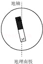
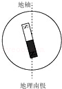
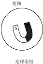
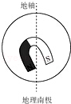
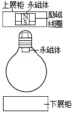
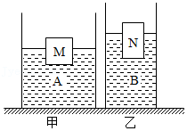

2015年北京市中考物理试题 · 选择题 第11、12、13、14、15题
11．（2分）通常情况下，关于一段粗细均匀的镍铬合金丝的电阻，下列说法中正确的是（ ）
A．合金丝的电阻跟该合金丝的长度有关
B．合金丝的电阻跟合金丝的横截面积无关
C．合金丝两端的电压越大，合金丝的电阻越小
D．通过合金丝的电流越小，合金丝的电阻越大
12．（2分）下列说法中正确的是（ ）
A．凸透镜只对平行光有会聚作用
B．反射光线与入射光线不在同一平面内
C．一束太阳光可以通过三棱镜分解为不同的色光
D．人离平面镜越远，人在平面镜中所成的像就越小
13．（2分）若假想地磁场是由地球内部一块大磁铁产生的，如图所示的四个示意图中，能合理描述这块大磁铁的是（ ）
A．

B．
C．

D．
14．（2分）在中国科技馆“探索与发现A厅”，有一个有趣的磁悬浮灯泡，其示意图如图所示。在磁悬浮灯泡的内部装有一块永磁体，在灯泡上方的展柜中安装有永磁体和一个励磁线圈，给励磁线圈通电，在控制电路的调节下，永磁体和励磁线圈所产生的磁场能使灯泡静止悬浮在空中。关于灯泡受力情况，下列说法中正确的是（ ）

A．灯泡受到的磁力方向竖直向下
B．灯泡受到的磁力方向竖直向上
C．灯泡受到的磁力小于灯泡受到的重力
D．灯泡受到的磁力大于灯泡受到的重力
15．（2分）如图所示，水平桌面上放置由甲、乙两个圆柱形容器，甲容器盛有液体A，物块M漂浮在液体A中，物块M排开液体的质量为m1，液体A对甲容器底部的压强为p1；乙容器中盛有液体B，物块N漂浮在液体B中，物块N排开液体的质量为m2，液体B对乙容器底部的压强为p2，已知甲容器底面积大于乙容器底面积，容器中液体A、B质量相等，物块M、N质量相等。下列判断中正确的是（ ）

A．p1＜p2B．p1＞p2C．m1＜m2D．m1＞m2